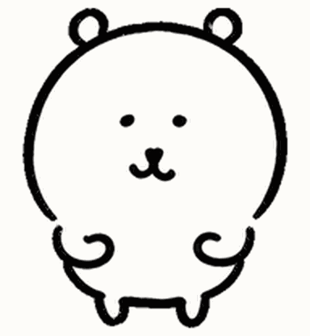
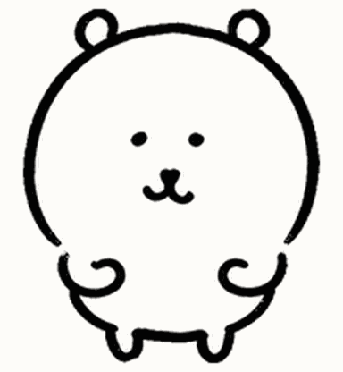
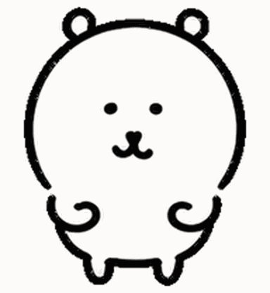
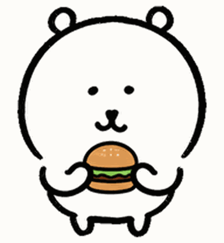
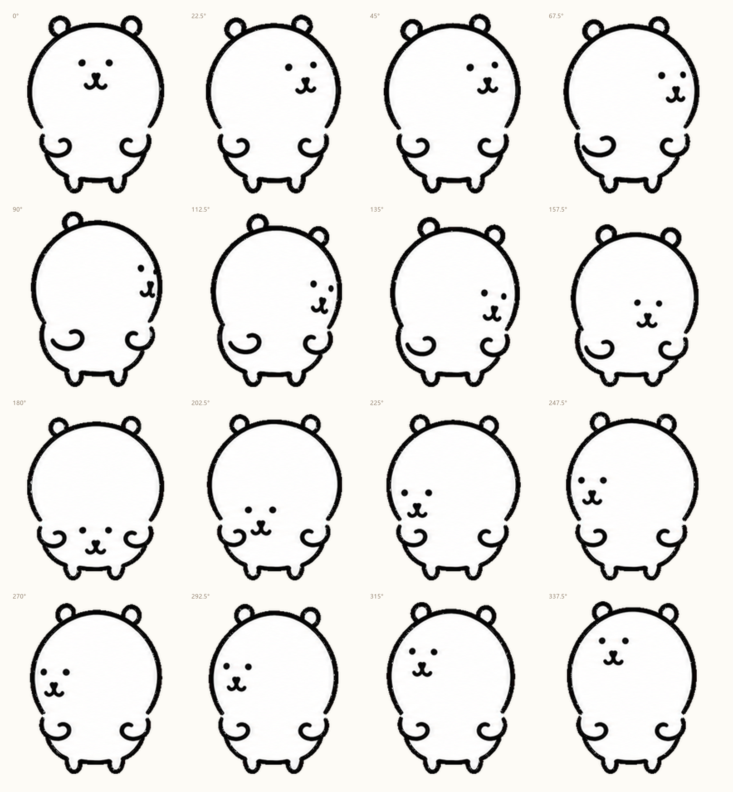

petdex 上的自嘲熊 v2 桌宠包：9 个标准动作 + 16 个注视方向，共 88 格。
row 0 · 6 帧 · 1100 ms/轮
眨眼、轻微呼吸；第 7 格是 v2 的正脸注视帧

row 1 · 8 帧 · 1060 ms/轮
抱着笔电打字，后半段开始冒汗
row 2 · 8 帧 · 1060 ms/轮
全程冒汗、越敲越急
row 3 · 4 帧 · 700 ms/轮
抬爪打招呼

row 4 · 5 帧 · 840 ms/轮
静态起落版，没有腾空位移
row 5 · 8 帧 · 1220 ms/轮
翻倒、躺平、再爬起来

row 6 · 6 帧 · 1010 ms/轮
捧着杯子小口喝
row 7 · 6 帧 · 820 ms/轮
在独立键盘上敲字
row 8 · 6 帧 · 1030 ms/轮
抱着汉堡啃

0° 朝上，顺时针每 22.5° 一格；90° 朝右，180° 朝下，270° 朝左。
